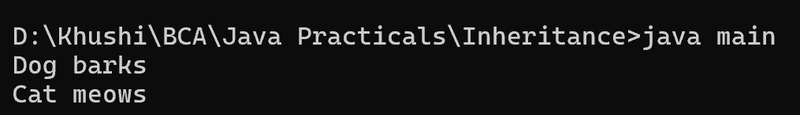

14. Create a program, showing an example of dynamic method dispatch
class Animal {
public void sound() {
System.out.println("Animal makes a sound");
}
}
class Dog extends Animal {
@Override
public void sound() {
System.out.println("Dog barks");
}
}
class Cat extends Animal {
@Override
public void sound() {
System.out.println("Cat meows");
}
}
class main {
public static void main(String[] args) {
Animal animal;
animal = new Dog();
animal.sound();
animal = new Cat();
animal.sound();
}
}
